Robust by design
Developed for demanding logistics and reduced breakage.
TREON builds and manages a repeatable industrial franchise system for circular material applications. CIRPAL pallets are the first application for country-based rollout.
TREON: franchise system, country rights & commercialisation · MeSentia: MEON technology platform & IP owner
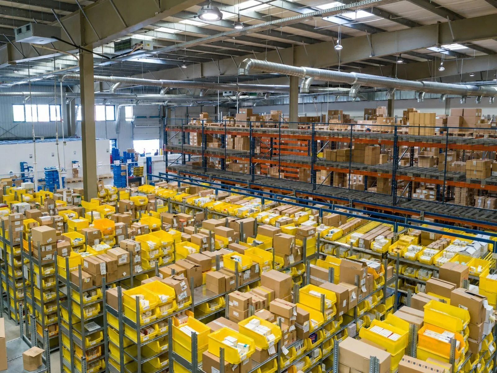
MEON processes difficult secondary materials. CIRPAL applies the platform to durable composite pallets for repeated industrial use.
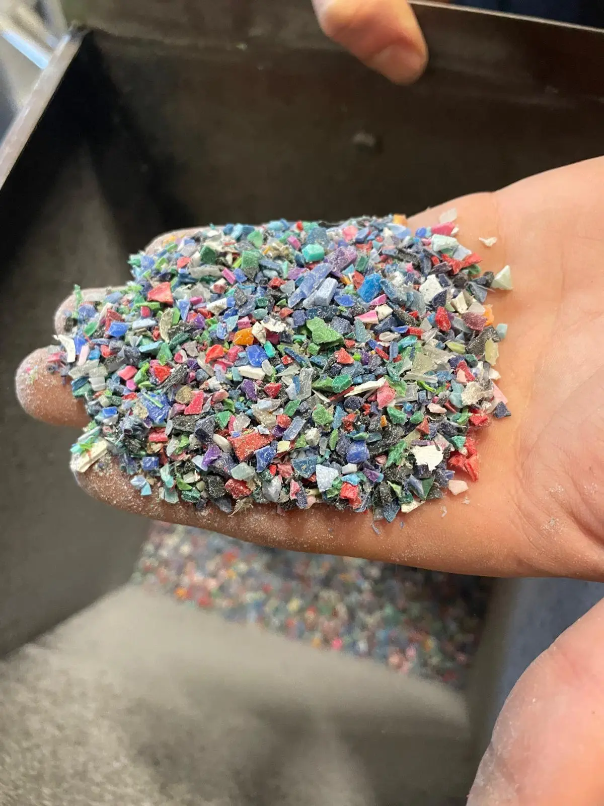
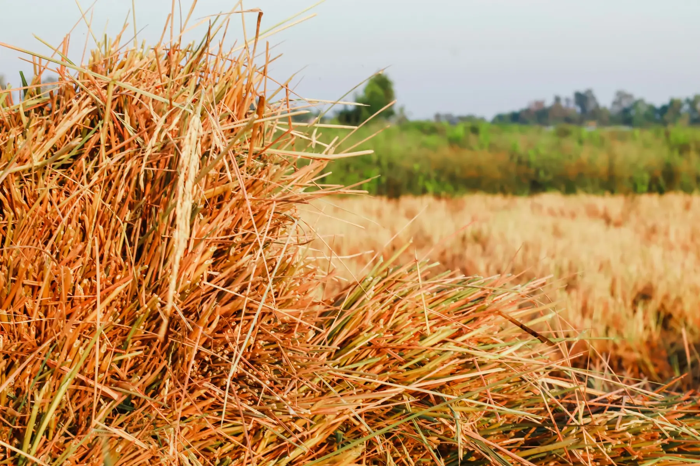
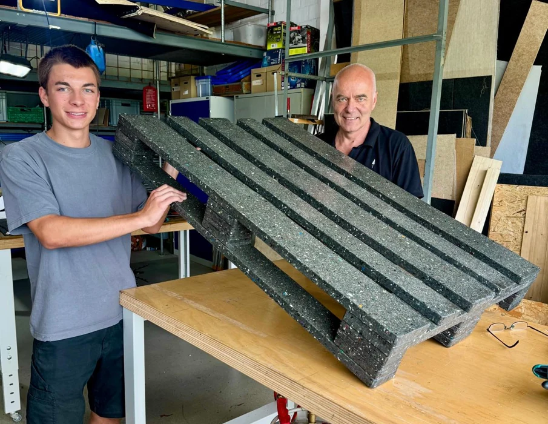
Developed for demanding logistics and reduced breakage.
Designed not to absorb moisture, supporting stable tare weight and outdoor use.
Target: about half the weight of a comparable conventional pallet, subject to load testing.
Repeated use and circular recovery aim to lower total lifecycle cost.
MeSentia AG provides the MEON technology and IP platform. TREON structures and commercialises country master franchise markets; CIRPAL is the first focused application.
Technology status: TRL 6 baseline (September 2026). Current work: repeatability, automation, quality control and full-scale validation.
MEON technology and CIRPAL in detail →Under executed country and technology agreements, TREON grants qualified country partners defined territorial rights to build local markets using the TREON commercial system and MEON production technology, subject to technical approval. MeSentia remains the technology and IP owner.
Brand, commercial framework, territory rules, operating standards, market development and international partner coordination.
Approved production technology, machines and technical standards are governed through the MeSentia technology framework.
Local investment, production execution, sales, customer development and compliance with TREON and MEON standards.
Control logic: TREON does not sell its system outright. Territory rights, quality standards, reporting, approved suppliers, brand use and minimum performance obligations remain contractually governed.
Explore country partnershipsTREON develops CIRPAL Country Master Franchise territories and supports selected international expansion through territory development, market access, sales and strategic partnerships.
CIRPAL country master franchise development, territory governance, operating standards, tracking and pooling.
Selected international markets: market analysis, sales, distribution and strategic partnerships.
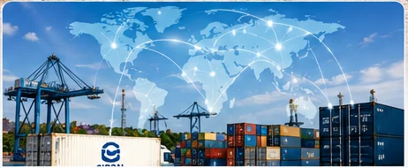
One-time franchise fees, recurring production royalties, possible support services and royalties from future applications.
TREON structures qualified country partners into recurring, controlled franchise revenue.
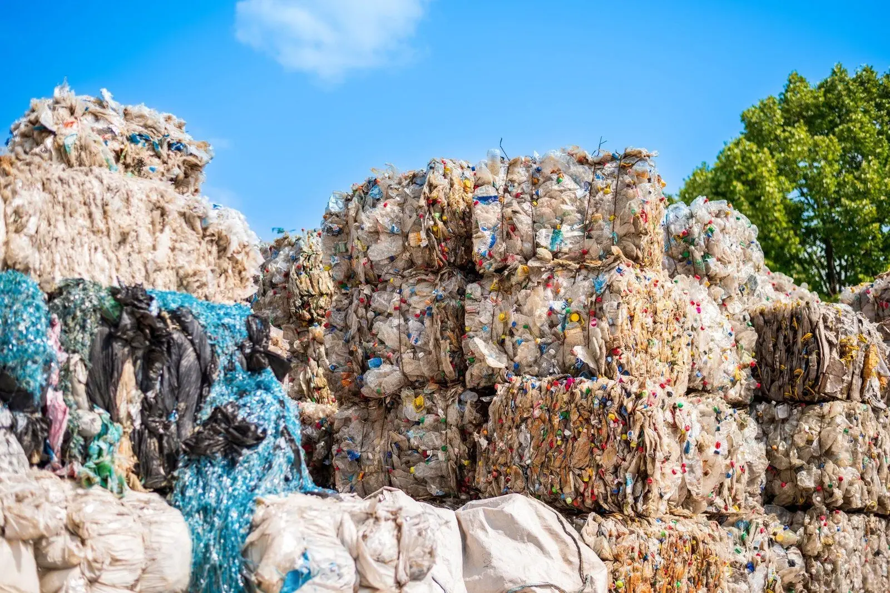
Build country demand and customer pipelines.
Connect technology, manufacturing and local partners.
Structure territories, franchise economics, standards, reporting and distribution.
Replicate successful models across countries.
TREON connects European technology and research with Asian materials, manufacturing and markets.
MeSentia provides MEON technology, engineering and IP. TREON’s country and commercialisation rights follow the executed agreements.
Country master franchise development · territory governance · commercialisation
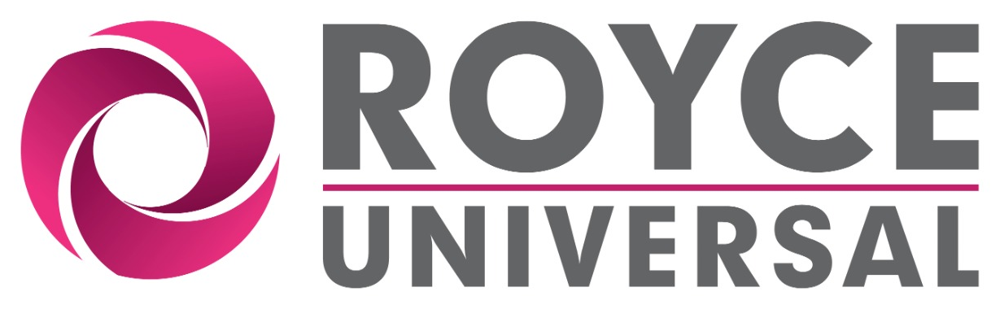
Royce Universal provides manufacturing, materials expertise, testing and market proximity for pilots and scale-up.
Thailand is the CIRPAL reference market for validating the TREON Industrial Master Franchise operating model, connecting technology, manufacturing and commercial execution.

European technology, Asian manufacturing and local resources — validated locally, designed to scale internationally.
The development target for Thailand is five machines over the next two years, corresponding to a nominal planning capacity of around one million pallets per year after full rollout; actual output remains subject to validation.
CIRPAL in detail →Priority franchise territories and development opportunities, from reference-market validation to partner qualification.
Project status: September 2026. Market references indicate development stage only. Country exclusivity is not implied unless documented in a signed agreement and subject to investment, milestone, reporting and compliance requirements.
TREON Thailand →Independent specialists cover defined roles across technology, materials, engineering and manufacturing.
Territory development, franchise governance, commercialisation, sales and strategic partnerships.
MEON technology and IP for difficult secondary materials; CIRPAL is the first application.
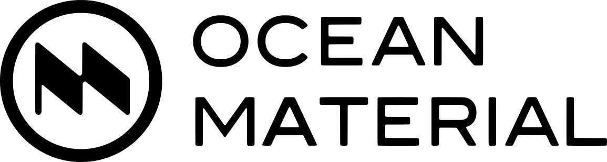
Qualified circular material streams, sourcing and international supply chains.
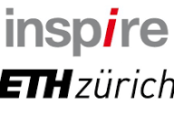
Materials analysis and scientific assessment of fibre-plastic composites.
Provides plant concepts, automation and technical implementation.
Industrial manufacturing, materials expertise, testing and co-innovation in Thailand.
TREON connects MEON technology, CIRPAL applications, manufacturing and qualified Country Master Franchise partners to scale circular solutions country by country.
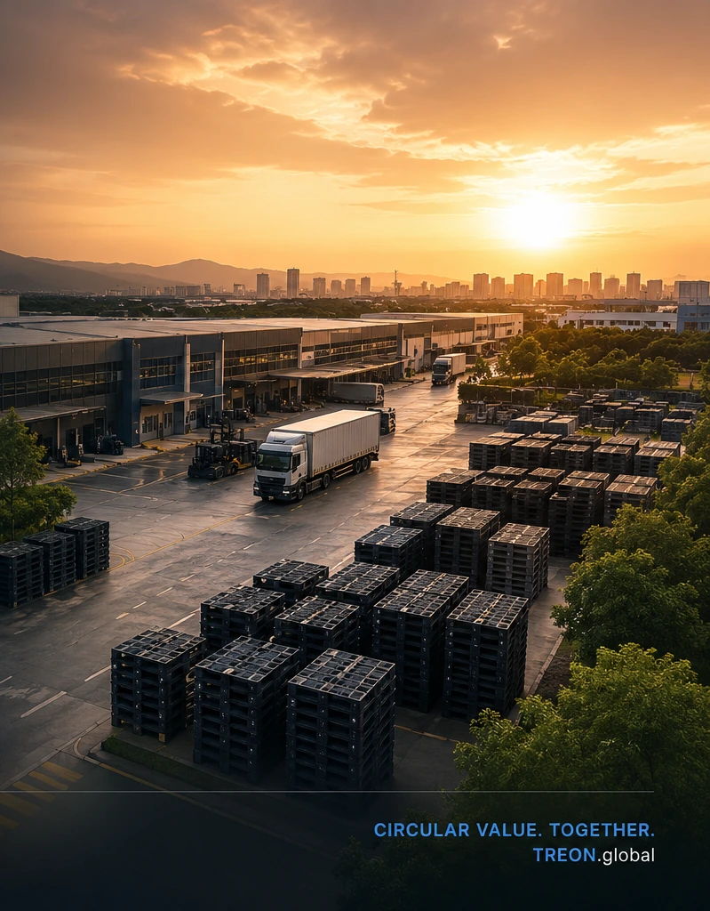